The Rococo / 01↗ Inspect↗ Inspect↗ Inspect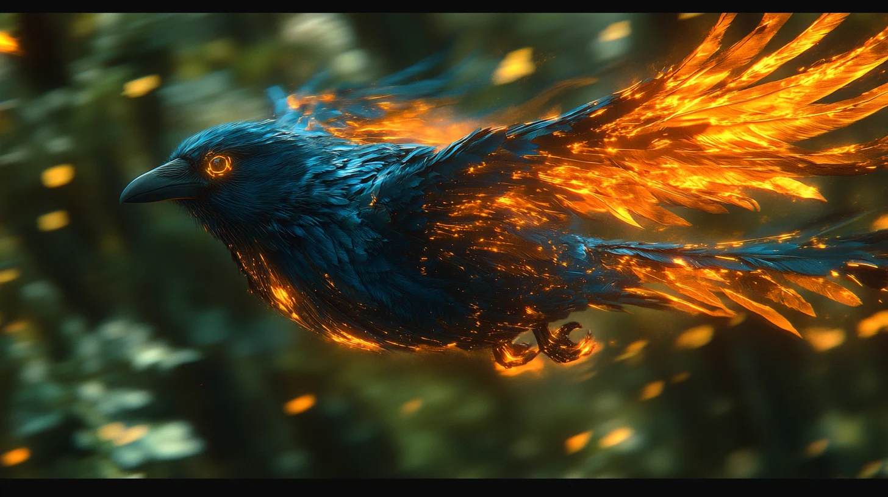↗ Inspect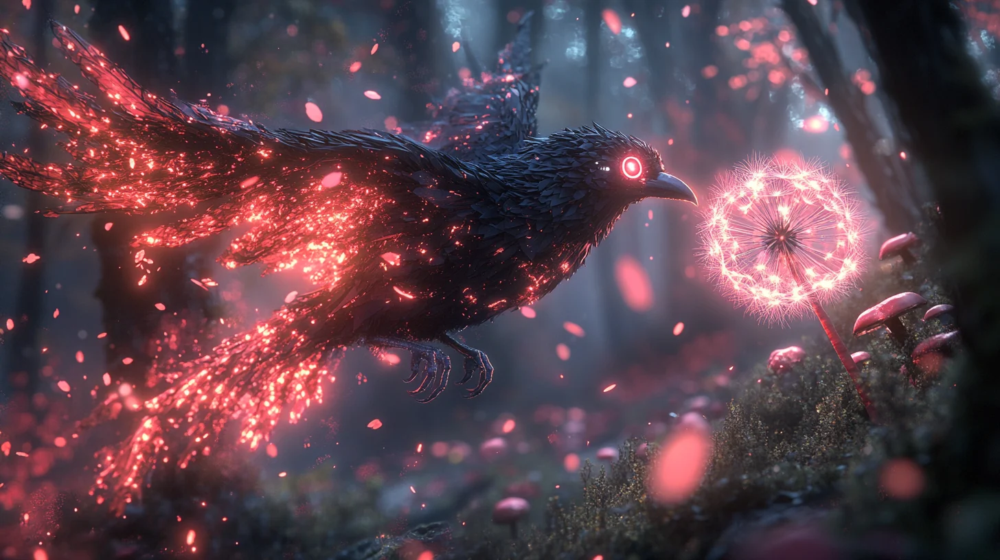↗ Inspect↗ Inspect↗ Inspect↗ Inspect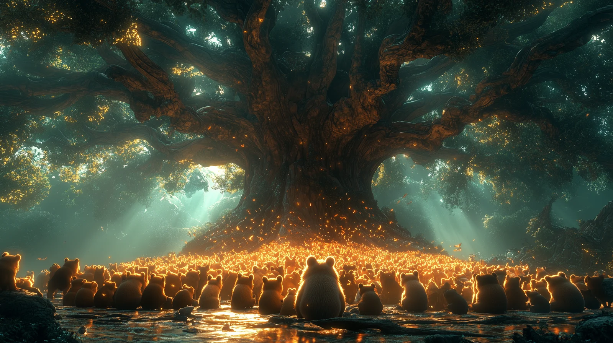↗ Inspect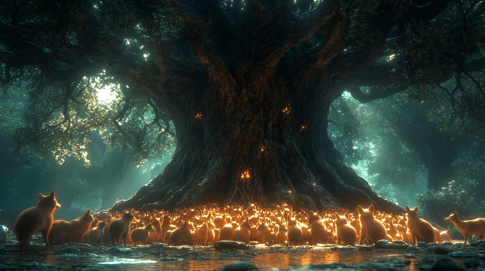↗ Inspect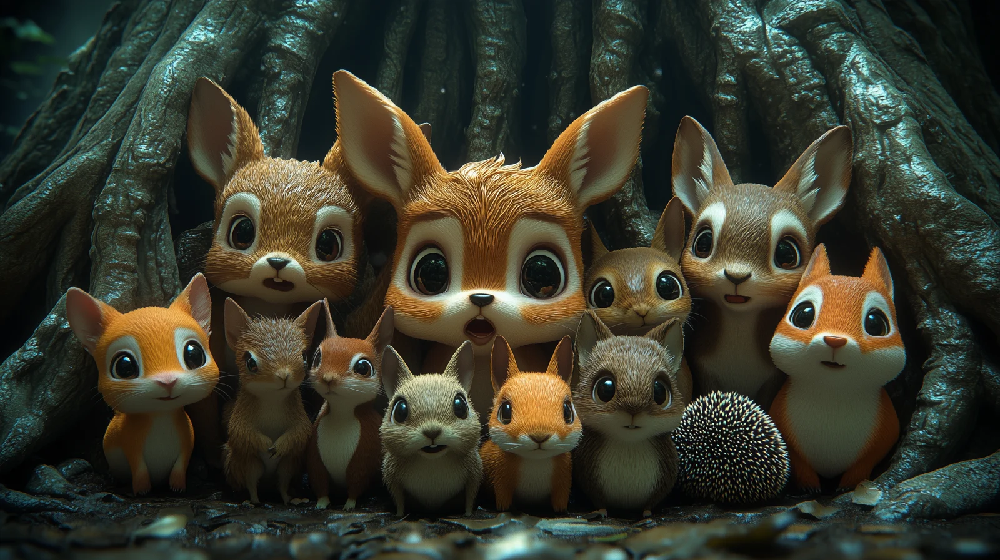↗ Inspect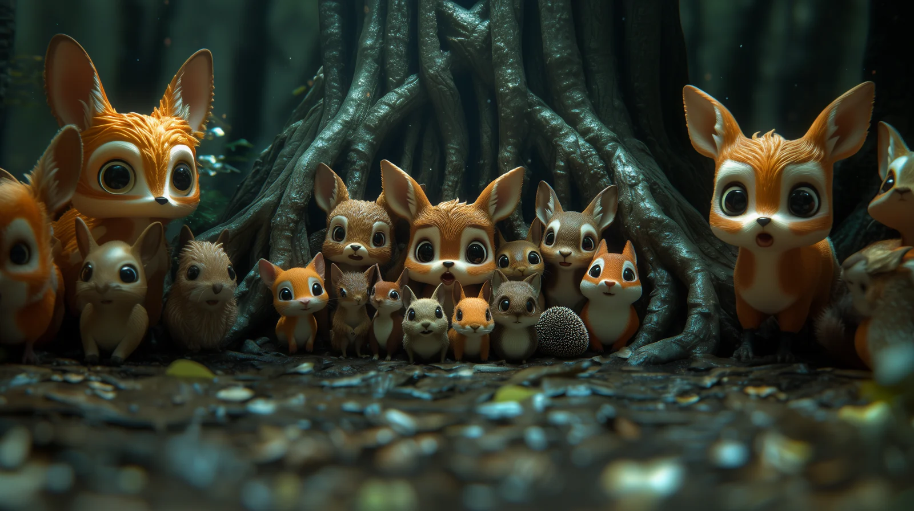↗ Inspect↗ Inspect↗ InspectThe Rococo / 02↗ Inspect↗ Inspect↗ Inspect↗ Inspect↗ Inspect↗ Inspect↗ Inspect↗ Inspect↗ Inspect↗ Inspect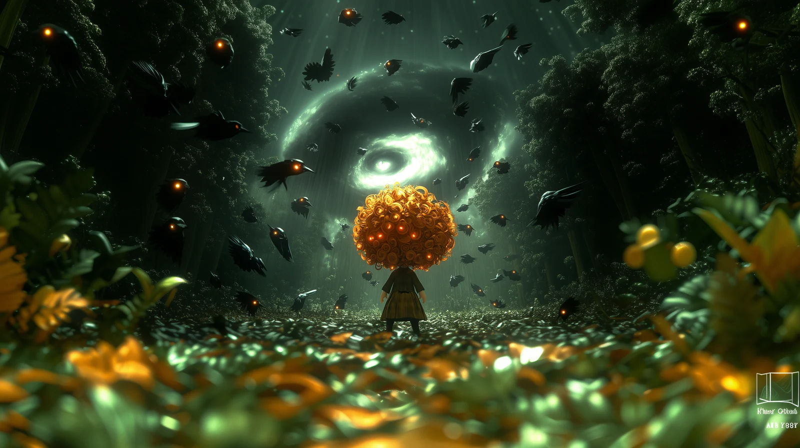↗ Inspect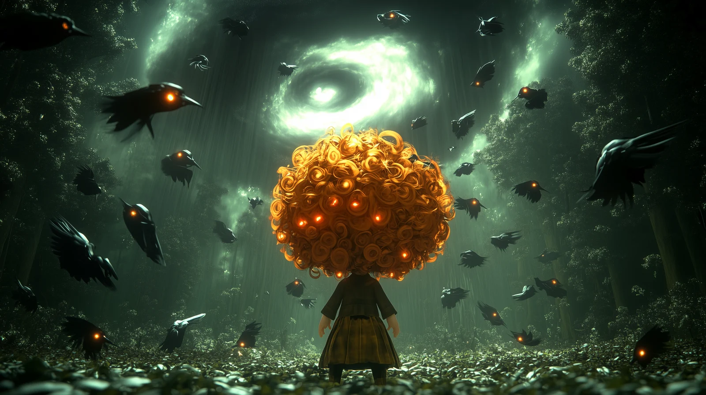↗ Inspect↗ Inspect↗ Inspect↗ Inspect↗ Inspect↗ Inspect↗ Inspect↗ Inspect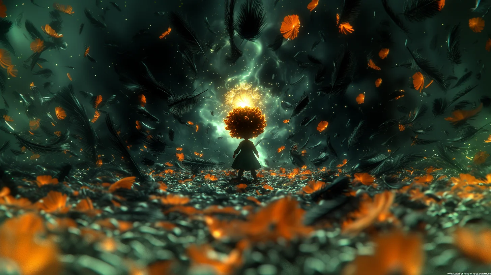↗ Inspect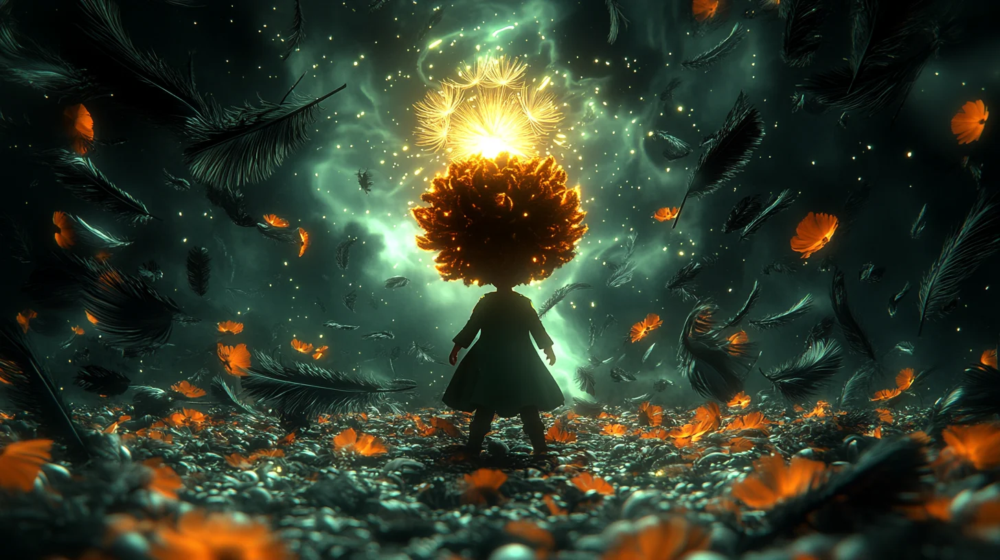↗ Inspect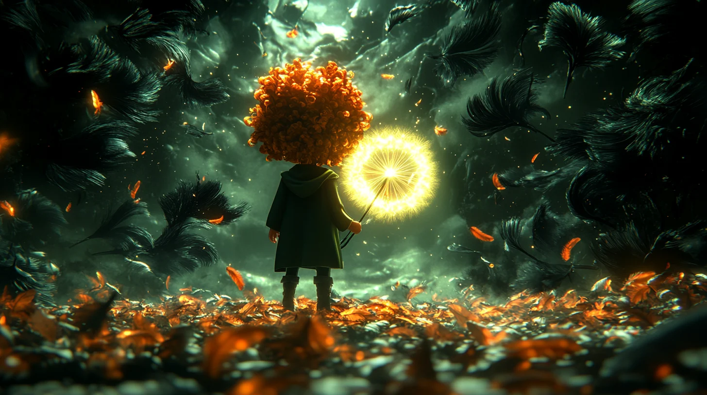↗ Inspect↗ InspectThe Rococo / 03↗ Inspect↗ Inspect↗ Inspect↗ Inspect↗ Inspect↗ Inspect↗ Inspect↗ Inspect↗ Inspect↗ Inspect↗ Inspect